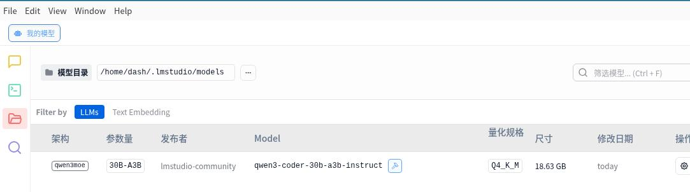

20250909
1. claude code
Ubuntu22.04, install steps as following:
$ sudo apt install -y npm
$ sudo npm install -g @anthropic-ai/claude-code
npm WARN EBADENGINE Unsupported engine {
npm WARN EBADENGINE package: '@anthropic-ai/claude-code@1.0.109',
npm WARN EBADENGINE required: { node: '>=18.0.0' },
npm WARN EBADENGINE current: { node: 'v12.22.9', npm: '8.5.1' }
npm WARN EBADENGINE }
# update nodejs
$ curl -fsSL https://deb.nodesource.com/setup_lts.x| sudo bash -
$ sudo apt install -y nodejs
# will fail
$ sudo apt remove libnode-dev
$ sudo apt install -y nodejs
$ sudo npm install -g @anthropic-ai/claude-code
$ claude --version
1.0.109 (Claude Code)
$ pip install 'litellm[proxy]'
LM Studio:
chmod 777 LM_Studio*
./LM_Studio* --appimage-extract
cd squashfs-root
./lm-studio
Start the listening port 1234:

Testing:
dash@ai:~$ curl http://localhost:1234/v1/models
{
"data": [
{
"id": "nomic-embed-text-v1.5",
"object": "model",
"owned_by": "organization_owner"
}
],
"object": "list"
Download the models from modelscope.cn:

mv ~/Downloads/Qwen3-Coder-30B-A3B-Instruct-Q4_K_M.gguf ~/.lmstudio/models/lmstudio-community/Qwen3-Coder-30B-A3B-Instruct-GGUF



$ pwd
/home/dash/Code/litellm
$ cat config.yaml
model_list:
- model_name: claude-3-5-haiku-20241022
litellm_params:
model: lm_studio/qwen/qwen3-coder-30b
api_key: sk-dummy
api_base: http://localhost:1234/v1
- model_name: claude-3-5-sonnet-20241022
litellm_params:
model: lm_studio/qwen/qwen3-coder-30b
api_key: sk-dummy
api_base: http://localhost:1234/v1
# 也支持原始模型名称
- model_name: qwen3-coder-30b
litellm_params:
model: lm_studio/qwen/qwen3-coder-30b
api_key: sk-dummy
api_base: http://localhost:1234/v1
- model_name: deepseek-r1
litellm_params:
model: lm_studio/deepseek-r1-distill-qwen-7b
api_key: sk-dummy
api_base: http://localhost:1234/v1
general_settings:
master_key: sk-lmstudio-proxy-12345
$ litellm --config config.yaml

2. socket proxy
Host side:
socat --experimental UNIX-LISTEN:/tmp/proxy.sock,fork TCP:192.168.1.33:21080
chmod 777 /tmp/proxy.sock
Create 1 docker instance:
$ sudo docker run --network none -v /tmp/proxy.sock:/tmp/proxy.sock -v /etc/resolv.conf:/etc/resolv.conf -it ubuntuwithcurl:latest /bin/bash
In docker instance:
root@5f50018c0076:/# socat TCP-LISTEN:1080,fork UNIX-CONNECT:/tmp/proxy.sock
root@5f50018c0076:/# cat /etc/apt/apt.conf.d/proxy.conf
Acquire::http::Proxy "socks5h://127.0.0.1:1080";
Acquire::https::Proxy "socks5h://127.0.0.1:1080";
then:
apt-get -y && apt upgrade -y